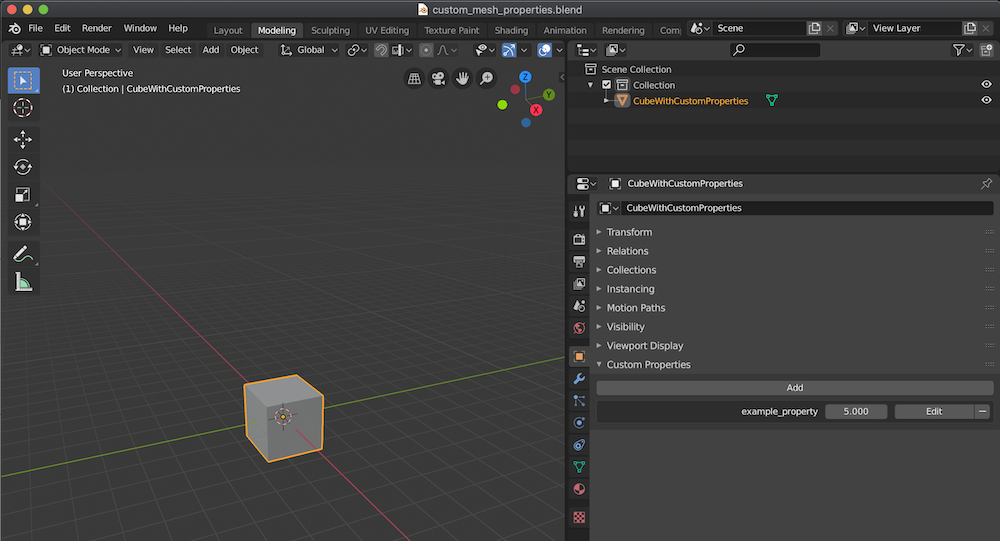
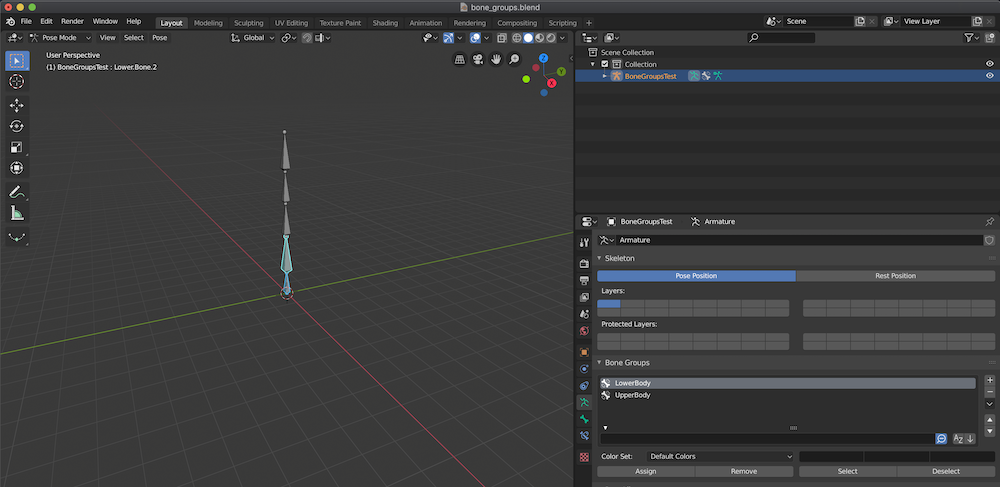
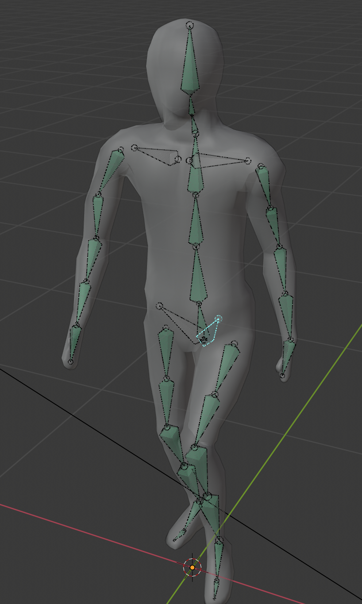
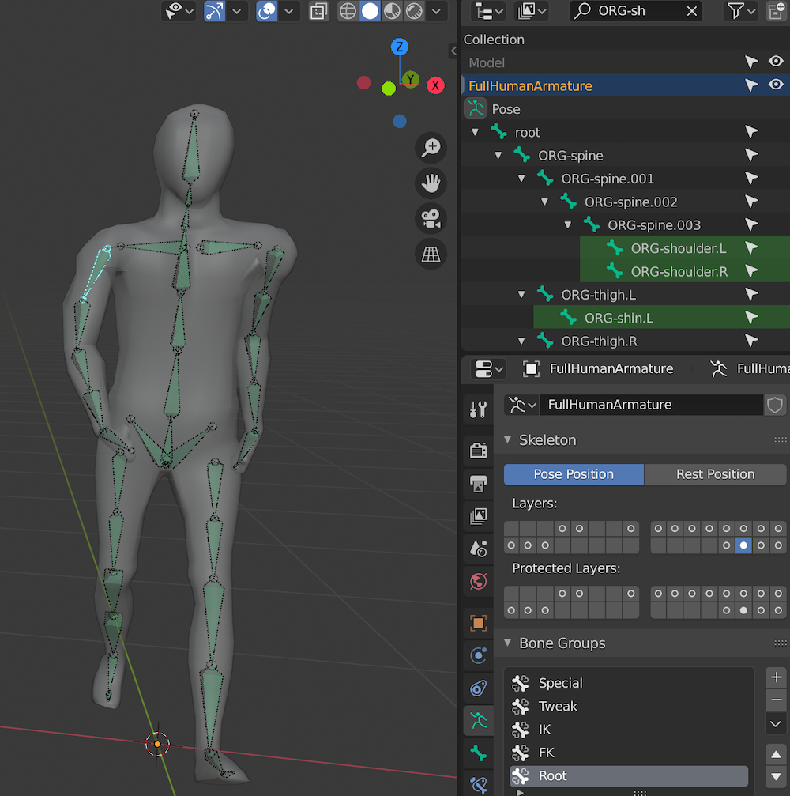

Introduction
landon is a collection of heavily unit and integration tested tooling, data structures and methods for
exporting data (such as meshes and armatures) from blender preparing it for your rendering pipeline.
A typical landon workflow involves running the mesh/armature data export scripts
(optionally supplemented with your own Python scripts) from Blender via the CLI or Rust API.
All export scripts write json stdout.
landon provides APIs to parse this data from stdout into Rust structs - but you can also read the JSON
output yourself if you don't use Rust.
#![allow(unused_variables)] fn main() { // Parsing exported landon data via the Rust API. // Rust is not required - you can read the exported JSON data with any programming language. let meshes = blender_mesh::parse_meshes_from_blender_stdout(&blender_stdout).unwrap(); let armatures = blender_armature::parse_armatures_from_blender_stdout(&blender_stdout).unwrap(); }
Goals
- Make it as easy as possible to take something from Blender and render it in your application without straying from the raw Blender data
- We favor exporting the data from Blender as is and then providing APIs to transform it in the different ways that you might like.
Example Use Cases
Some examples of things that landon might help you do include:
-
Export all of the meshes in a
.blendfile into a collection ofBlenderMesh's and call methods to get the vertex data such as positions, uvs and normals from thatBlenderMesh. -
Export all of the armatures in a
.blendfile and call methods to get the interpolated joint data at a certain keyframe to power your skeletal animation.
Landon CLI
The landon exporter can be accessed via CLI or Rust API.
Quick Start
cargo install -f landon
# Install blender mesh json exporter
landon blender install mesh-to-json
# Install blender armature json addon
landon blender install armature-to-json
landon blender export -f ./file.blend -f ./another-file.blend
Blender Mesh
Installing the mesh exporter add-on
# TODO: Expose a CLI tool for this instead of needing to clone the repo...
git clone git@github.com:chinedufn/landon.git
cd landon
blender --background --python ./install-addon.py
Custom Properties
landon exports all [custom properties] found on a mesh.
These can be useful when your application code wants to treat certain meshes differently based on certain properties that you label the mesh with in Blender.
For example - you might have a linter that ensures that none of your meshes go above 200 vertices in order to preserve your low poly art style.
There might be some exceptions to this rule - so your code might check for the override_max_vertex_count
custom property to enforce a different limit in special cases.
In Blender custom properties these can be added in the Object section of the Context panel.

Rust API
https://docs.rs/blender-mesh/0.4.6/blender_mesh/struct.BlenderMesh.html#method.custom_properties
Blender Armature
Bone Groups
landon exports all bone groups found on an armature.
One use case for this data is render different animations for different parts of an armature.
For example - if your game character is walking while punching - you might want to play a walking animation on it's lower body bones and a punch animation on its upper body bones.
In Blender you'd create a bone group for the upper body and another bone group for the lower body and then use this data in your renderer when determining which bones to render.

Rust API
https://docs.rs/blender-armature/0.2.0/blender_armature/struct.BlenderArmature.html#method.bone_groups
Blender Iks to Fks
Troubleshooting
This chapter contains information about how to troubleshoot failed attempts to convert IK/FK rigs into FK rigs.
Over time we want to replace this information with code that makes it unnecessary.
Troubleshooting Rigify
Shoulders and pelvis not converting properly
-
Copy transforms constraint from pelvis.L to ORG-pelvis.L
-
Copy transforms constraint from pelvis.R to ORG-pelvis.R
-
Snap IK to FK (or vice versa) for all keyframes for both hands
- Press
Actionin theRig Main propertiesunderIK->FKfor left hand - Press
Actionin theRig Main propertiesunderIK->FKfor right hand
- Press
-
Action item: Open issue in the rigify repository asking if these constraints can be added by default
Before Copying Transforms
Notice that the shoulders and pelvis are not green to start off with.

After Copying Transforms
After copying transforms the shoulders and pelvis will become green.
